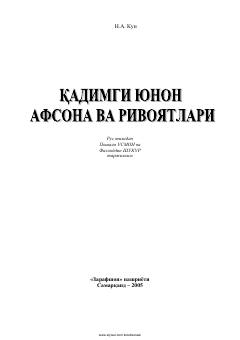

QYQadimgi yunon mifologiyasi va ma'budlari haqidagi mashhur afsonalar to'plami.
Ushbu kitobda qadimgi yunonlarning ilohiy kuch-qudrati, qahramonlari va ma'budlari haqidagi mashhur afsona hamda rivoyatlar jamlangan. Nikolai Kun tomonidan qayta jonlantirilgan bu antik asarlar jahon madaniyati va san'atiga ulkan ta'sir ko'rsatgan. Mazkur to'plam keng kitobxonlar doirasi uchun mo'ljallangan bo'lib, qadimgi dunyo tafakkuri va mifologiyasi bilan yaqindan tanishtiradi.